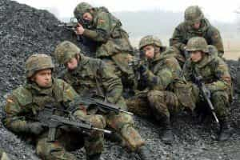
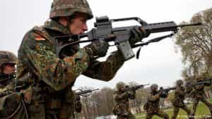

Quintus can be found at qcurtius.com. He is the author of the books On Duties, Thirty Seven, Sallust: The Conspiracy Of Catiline And The War Of Jugurtha, and other books. His work has been reviewed at Taki's Magazine. He can be followed on Twitter


Beyond the depressing headlines, there may—perhaps—be grounds for cautious optimism that the German establishment is waking up to the fact that they need to change their security doctrine. Angela Merkel’s recent white paper on Germany’s national security challenges seems to indicate that her government is slowly becoming aware that major changes need to be made to both security doctrine and implementation.
While it is still too soon to tell if actions will match the rhetoric, one can at least detect quiet shifts in German security doctrine from a careful reading of Berlin’s most recent security white paper.
![ARCHIV - Rund 1000 Soldtaten nehmen am Dienstag (12.04.2011) in Amberg (Oberpfalz) an einem Appell teil. Die Männer und Frauen der 10. Panzerdivision der Bundeswehr waren zuvor von Einsätzen in Afghanistan und auf dem Balkan zurückgekehrt. Das Bundeskabinett will an diesem Mittwoch (18.05.2011) die Pläne für die Reform der Bundeswehr beschließen. Verteidigungsminister de Maizière stellt sie anschließend der Öffentlichkeit vor. Er plant eine deutliche Verkleinerung der Streitkräfte und eine Straffung der Strukturen. Foto: Armin Weigel dpa/lby +++(c) dpa - Bildfunk+++](wp-content/uploads/2016/07/bund3-300x205.jpg)
Europe in general and Germany in particular has been reeling in 2016 from multiple terrorist attacks. Chancellor Merkel, nothing daunted, has doubled-down on her pro-immigration position with the mantra of “We can do this.” Bavarians were less convinced. Horst Seehofer, the Bavarian premier, angrily attacked what looked to him like willful blindness coming out of Berlin.
“I cannot, with my best will, adopt this phrase [‘We can do this’] as my own,” Seehofer recently said. He went further in remarks to the news outlet Die Welt: “A ban on the full body veil—that is the niqab and the burka—is overdue. My impression is that we all underestimated a year ago what would come upon us with this big refugee and migration movement.”
While for political and statecraft reasons Merkel may continue to adhere to her line, her recent security white paper suggests subtle changes of mentality and direction. We will explore some of them here.
The purpose of the white paper is to discuss security policy and the future of the Bundeswehr. What one notices from the first is that this paper is at least free from the apologetic baggage that always seems to weigh down any German discussion of military affairs. This in itself may be a sign that we are finally starting to close the curtain on the post-Second World War era complexes of anti-nationalism and guilt.
In many ways the paper does not go far enough: most issues are couched in the framework of acting in conjunction with NATO allies, which may be seen as code that Germany continues to hesitate to act unilaterally. The following statement, for example, sends the message that the country continues (on paper, at least) to see the need to ask others for permission to defend itself:
Our interests remain closely interwoven with those of our allies and partners. Germany values reliability and loyalty to its allies. It is only in cooperation with others that Germany can protect its territory and open society, make effective use of its profound but limited resources, and unfold its innovative and productive potential. Pursuing German interests therefore always means taking into account the interests of our allies and those of other friendly nations.
NATO continues to be presented as the indestructible linchpin of security policy, at a time when many believe that the country should be looking to more of an independent course. How much of this is just rhetorical genuflection, and how much of this is actual policy, will remain to be seen.
But there are some good things here. We must look to the subtleties, and realize that the true meanings lie in the obliquities of what is said. There is an awareness that, as the years roll on, it will be increasingly difficult to separate internal from external security. This is a clear reference to the refugee problem, and points to a realization that unrestricted immigration can be tied to security threats. The following quote, regarding mass migration, would never have been made even five years ago:
In large numbers, uncontrolled and irregular migration can, however, entail risks both for the immediately affected region as well as for Europe and Germany. The ability to absorb and integrate migrants can be overstretched, which can lead to social instability. Refugee movements resulting from violent conflicts can also cause such conflicts to spread throughout a region.
We can also detect a willingness to move away from the traditional constitutional prohibitions on the military’s becoming involved in domestic affairs. The military will now assist the local governments to deal with threats, blurring the distinction between local and national security. The following statement is an important one:
It is no longer possible to draw a sharp distinction between internal and external security. Disruptions and threats can frequently be found in the grey area in between. The vulnerabilities of our open and globally interconnected society are deliberately targeted. These circumstances necessitate an effective whole-of-government approach to security. This includes protecting the sovereignty and integrity of German territory and German citizens and rescuing German nationals in emergency situations abroad.
This is a major step, quietly pursued out of the headlines; it is one that would not have happened without the wave of terrorist attacks that has hit Europe in 2016. Much the same changes are happening in Japan, which after much agonized soul-searching is moving beyond the post-World War II mentality to something new and different.

With the advent of cyber warfare, hybrid warfare, and other types of non-traditional conflict, it is clear that the old rules no longer have the same utility that they once had.
The German Federal Security Council, composed of the chancellor and select ministers, will now have a greater role than before. It also appears that the chancellor will have enhanced capabilities to deal with real-time threats. The emphasis now is on prevention rather than on dealing with problems after the fact.

That is, there will be more proactivity, and less reactivity. In conjunction with this, the size of the army will grow to 185,000, which represents a modest increase of 7,000 persons. One would have hoped for a larger increase, and for a much larger commitment to defense spending. There is also a clear understanding that increased participation in foreign military operations will be required by new conditions:
Germany must participate in the prevention and stabilisation of crises and conflicts as well as in post-crisis and post-conflict management, depending on the extent to which it is affected and its available options. A forward-looking, comprehensive and sustained approach is required for this purpose which also includes civil society and cultural factors. Prevention always takes precedence.
Long-term prevention and stabilisation will only succeed if local and regional actors are enabled to assume responsibility for themselves. Strengthening good governance and respect for human rights in such states is therefore of paramount importance. The early recognition of crises is essential for effective involvement at an early stage. We must combine national and international, state and non-state expertise to create a clear overall picture.
German policy in recent decades has tended to be slow, methodical, and cautious. so it would be unrealistic to expect any grand, sweeping changes at this point. But, if we read between the lines here, we can detect the beginnings of what may become significant changes in German security policy. As always, the real test will lie in how the system responds to future challenges.
Read More: It’s Time To Make Men Strong Again